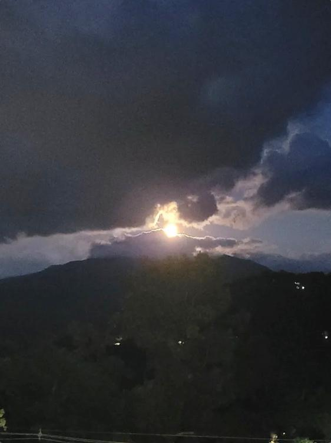

Experience the magic of the Smoky Mountains at dawn and dusk
There's something truly magical about watching the sun paint the Smoky Mountains in shades of pink and gold, or seeing the moon rise over the misty peaks. Whether you're an early bird chasing the perfect sunrise or a romantic looking for that unforgettable moonrise moment, Gatlinburg offers some of the most breathtaking celestial views in the country.
After staying at countless cabins in the area and exploring every vantage point, we've compiled the ultimate guide to experiencing these natural wonders during your Smoky Mountain getaway.
📸 All photos in this post were captured from the balcony of Classy Bear Cabin — yes, these are the actual views you'll wake up to!
Why Gatlinburg is Perfect for Sky Watching
The Great Smoky Mountains create a dramatic backdrop that transforms every sunrise and moonrise into a work of art. The elevation changes, misty valleys, and lack of light pollution in certain areas make this region ideal for witnessing nature's daily spectacles.

Best Sunrise Viewing Spots
1. Clingmans Dome (45 minutes from Gatlinburg)
At 6,643 feet, Clingmans Dome is the highest point in the Great Smoky Mountains National Park. The observation tower provides 360-degree views, making it one of the most spectacular places to watch the sun rise over the mountains.
- Best time: Arrive 30 minutes before sunrise
- Pro tip: Bring layers—it can be 10-20 degrees cooler at the summit
- Note: The access road is closed December-March
2. Cades Cove
This historic valley offers wide-open meadows perfect for sunrise photography. The early morning mist rising from the fields as the sun peeks over the mountains is absolutely magical. Plus, you might spot wildlife during the quieter morning hours.
- Best time: Gates open at sunrise (hours vary by season)
- Pro tip: Do the 11-mile loop early to beat the crowds
- Bonus: Excellent wildlife viewing opportunities
3. Newfound Gap
Located right on the North Carolina-Tennessee border at 5,046 feet, Newfound Gap is easily accessible and offers stunning panoramic views. The sunrise here illuminates layer upon layer of mountain ridges—a photographer's dream.
- Best time: 30-45 minutes before sunrise
- Pro tip: The parking area can fill up; arrive early
- Fun fact: This is where the Appalachian Trail crosses Newfound Gap Road
4. Your Private Cabin Deck ⭐
Don't underestimate the magic of watching sunrise from the comfort of your own cabin! Many Gatlinburg cabins (including Classy Bear Cabin) offer stunning mountain views. Enjoy your coffee as the mountains come alive with color—no driving required.
- Best time: Any time you wake up!
- Pro tip: Keep a blanket and coffee ready the night before
- Why we love it: Privacy, comfort, and convenience

Best Moonrise Viewing Spots
1. Gatlinburg Space Needle
The 407-foot Space Needle offers unobstructed 360-degree views of the Smokies. Watching the full moon rise over the mountains from this vantage point is unforgettable, especially during the warmer months when the observation deck stays open late.
- Best time: Check moonrise times and arrive 15 minutes early
- Pro tip: Visit during a full moon for the best show
- Bonus: The deck is climate-controlled year-round
2. Laurel Falls Trail (Easy Hike)
This popular 2.6-mile round-trip hike is paved and relatively easy, making it perfect for an evening moonrise hike. Time your hike so you're at the falls or on the trail when the moon rises over the ridgeline.
- Best time: Start 1 hour before moonrise
- Pro tip: Bring headlamps or flashlights for the return hike
- Safety note: Stay on marked trails and hike with a buddy
3. Ober Gatlinburg
Take the aerial tramway up to Ober Gatlinburg and enjoy moonrise from the observation deck. The combination of twinkling town lights below and the moon rising over the peaks creates a stunning contrast.
- Best time: Ride the tram up 30 minutes before moonrise
- Pro tip: Check operating hours—they vary by season
- Bonus: Enjoy dinner at one of the mountain-view restaurants
4. Sugarlands Valley
This lesser-known spot offers wide valley views with the mountains as a backdrop. The moonrise here is spectacular because you can watch the moon climb over the ridgeline with minimal light pollution.
- Best time: Position yourself 20 minutes before moonrise
- Pro tip: Bring binoculars to see lunar details
- Location: Near Sugarlands Visitor Center

Planning Your Celestial Adventure
Check the Times
Sunrise and moonrise times vary throughout the year. Use apps like:
- The Photographer's Ephemeris
- PhotoPills
- TimeAndDate.com
Weather Matters
Partly cloudy days often produce the most dramatic sunrises and sunsets. The clouds catch and reflect light, creating those stunning pink and purple skies. Check the forecast and don't be discouraged by a few clouds!
Best Seasons
- Spring (March-May): Wildflowers, moderate temperatures, blooming dogwoods
- Summer (June-August): Warm weather, late sunrises (good for sleeping in!)
- Fall (September-November): Spectacular foliage adds color to your sunrise/sunset
- Winter (December-February): Crisp, clear mornings; potential snow-capped peaks
What to Bring
- Warm layers: Mountain temperatures can be chilly, especially at sunrise
- Hot beverage: Coffee or tea in a thermos
- Camera: Don't forget extra batteries (cold weather drains them fast)
- Tripod: For those long-exposure shots
- Blanket: For sitting and staying warm
- Headlamp: If you're hiking in low light
Photography Tips
- Arrive early: The best colors often happen 20-30 minutes before sunrise
- Use a tripod: Low light requires longer exposures
- Try different angles: Don't just shoot the sun; capture the light on the mountains
- Include foreground: Trees, rocks, or wildflowers add depth
- Bracket your exposures: The dynamic range at sunrise is challenging

The Classy Bear Cabin Experience
One of the best parts about staying at a mountain cabin in Gatlinburg? You have your own private viewing spot right outside your door. Imagine stepping onto your deck with a warm cup of coffee, wrapped in a cozy blanket, and watching the sun rise over the Smoky Mountains—no crowds, no driving, just you and nature.
Many of our guests tell us that these quiet morning moments on the deck become the highlight of their trip. The mountains reveal themselves slowly as the light changes, and you might even spot wildlife making their morning rounds.
Our summit location in Chalet Village means unobstructed views that can't be blocked by future development. You'll see the same breathtaking panoramas in every photo on this page—and they'll be yours to enjoy during your stay.
Safety Reminders
- Let someone know your plans if you're heading out early or to remote areas
- Stay on marked trails and viewing areas
- Be wildlife aware: Dawn and dusk are active times for bears and other animals
- Check road conditions in winter—some routes may be closed
- Bring proper lighting if you'll be out during low-light conditions
Final Thoughts
Whether you're chasing the perfect sunrise photo, hoping to see a rainbow after a mountain storm, or simply want to experience the peaceful beauty of a moonrise over the Smokies, Gatlinburg offers endless opportunities for celestial wonder.
The best view might be from a mountaintop, a scenic overlook, or simply from your cabin's deck with your loved ones beside you. Wherever you choose to watch, these moments of natural beauty will become cherished memories of your Smoky Mountain adventure.
Ready to experience your own mountain sunrise or moonrise? Book your stay at Classy Bear Cabin and wake up to views that will take your breath away.
Have you captured an amazing sunrise or moonrise in Gatlinburg? Share your photos with us on Instagram @classybearcabin — we'd love to see your mountain moments!
Plan Your Stay: Visit classybearcabin.com to book your mountain getaway.